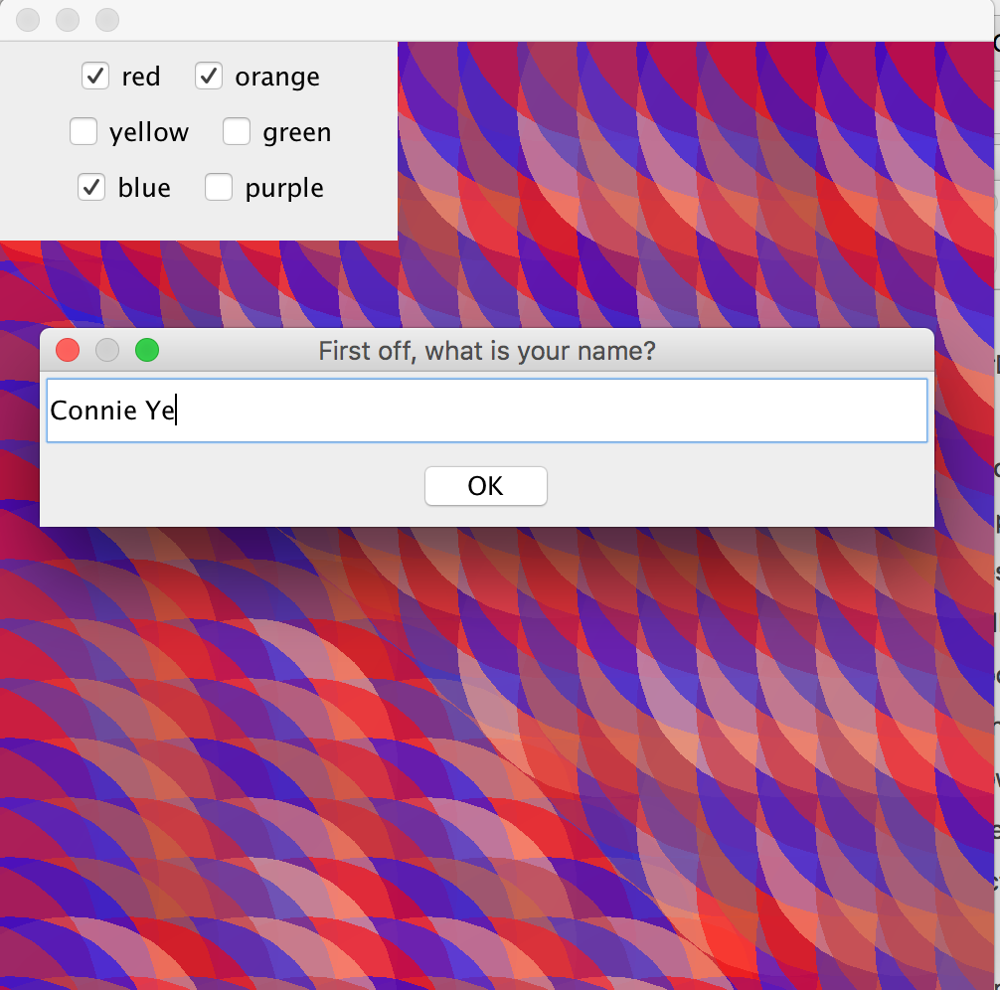
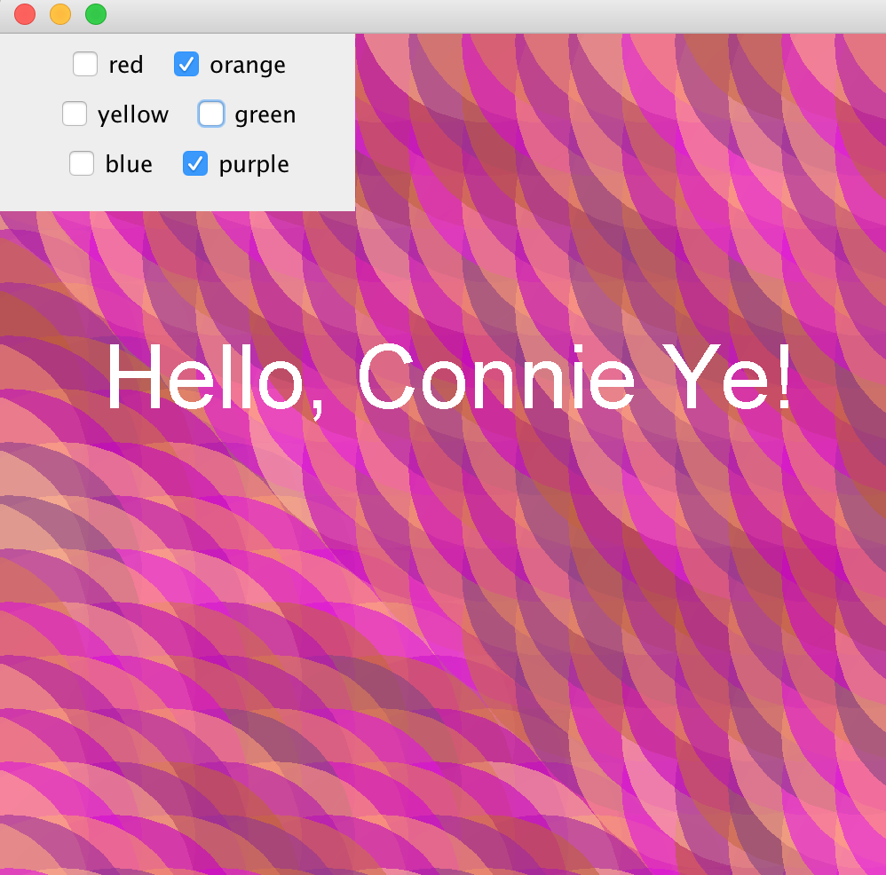
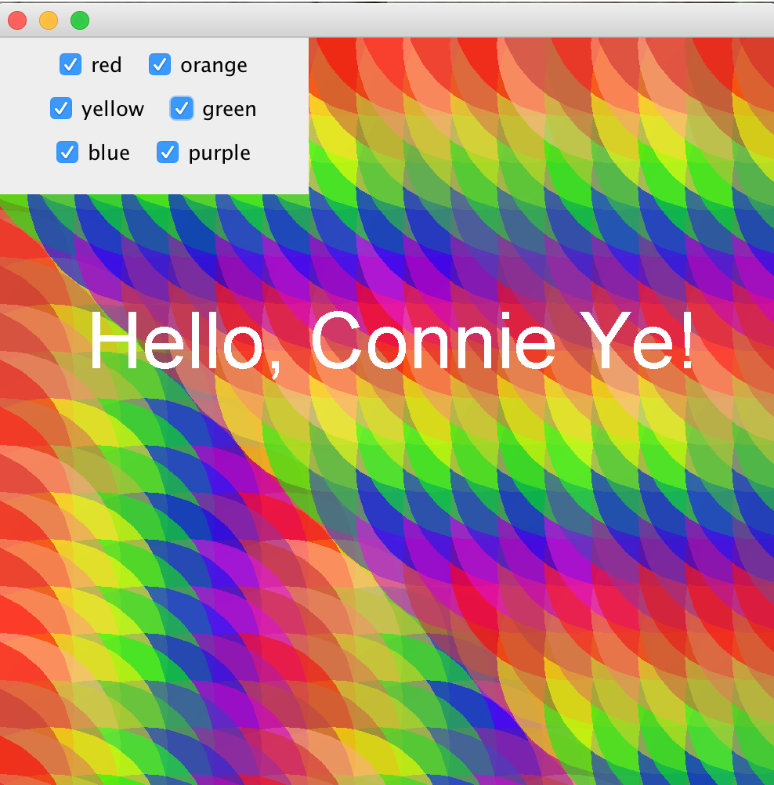

Note: Most of these work better on desktop! Ordered chronologically, from newest to oldest.
Projects
2017 - Lightbot + Scratch: Web application that allows students in AP Computer Science Principles to test out their block code in preparation for AP test questions about a robot on a grid. Users drag and drop blocks (move, rotate, repeat loop, if/else, can-move) and watch their block code play out on a grid of modifiable size with custom obstacle locations.
2016 - Doodle Date: Online multiuser drawing tool. Users can create or join rooms and draw with their friends on the same canvas. Pen and eraser have custom size, opacity and width options. Doodle date also includes: color wheel, download, import image reference, layers.
9/5/16 - GUI Color Mixer - has checkboxes so the user can choose the color, then repaints with a background made of the chosen color and variations of them.
